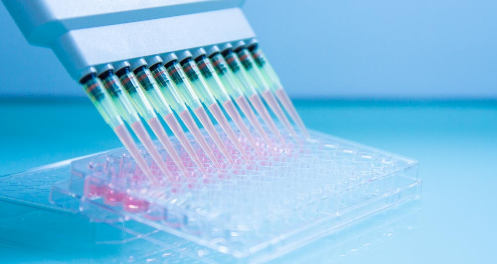
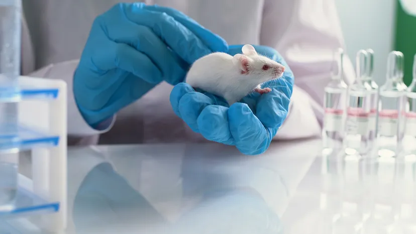

From Biology to
Data-Driven Insights
Bridging scientific research and data science through rigorous methodology, reproducible analysis and real-world problem solving.

PhD in Biological Sciences passionate about applying data analytics, visualization and machine learning to transform complex datasets into actionable insights.
Bridging scientific research and data science through rigorous methodology, reproducible analysis and real-world problem solving.

Experimental study of plant extract on semen quality, using in vitro biotechnology approaches for sperm conservation.

Experimental study of plant extract on male reproductive system, focusing on sperm quality and sexual behavior in mice.
Developed an NLP pipeline to classify SMS messages as spam or ham.
Applied text preprocessing, TF-IDF vectorization and compared multiple
machine learning models to improve performance on imbalanced data.
Tools: Python, NLP, Scikit-learn.
Built predictive models to estimate customer default probability,
including preprocessing, feature engineering and evaluation.
Tools: Python, Scikit-learn.
Python • Pandas • NumPy • SQL • Data Visualization • Machine Learning • Statistical Analysis